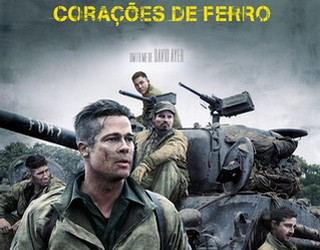
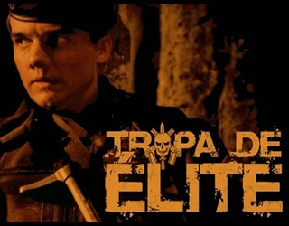
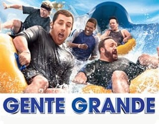

ㅤ
|  |  |
ㅤ
| Durante o final da Segunda Guerra Mundial, o sargento Don Wardaddy lidera um grupo de apenas cinco soldados norte-americanos encarregado de aniquilar os nazistas. Em um tanque de guerra Sherman, os homens enfrentam uma missão mortal. | Três amigos de colégio planejam uma festa inesquecível para entrar para a história na tentativa de ficarem famosos. A notícia se espalha rapidamente e tudo foge ao controle quando os imprevistos começam a acontecer. | O Capitão Nascimento, da Tropa de Elite do Rio de Janeiro, é designado para chefiar uma das equipes que tem como missão apaziguar o Morro do Turano. Ele precisa cumprir as ordens enquanto procura por um substituto para ficar em seu lugar. | Um ex-agente federal embarca em uma perigosa missão para salvar uma menina dos cruéis traficantes de crianças. Com o tempo se esgotando, ele viaja pelas profundezas da selva colombiana, colocando sua vida em risco para libertá-la. |
Filmes
ㅤ
 |
 |
ㅤ
| Buscapé é um jovem pobre, negro e sensível, que cresce em um universo de muita violência. Ele vive na Cidade de Deus, favela carioca conhecida por ser um dos locais mais violentos do Rio. Amedrontado com a possibilidade de se tornar um bandido, Buscapé é salvo de seu destino por causa de seu talento. | Após a morte de sua mãe quando ele era um menino, Marcus tem pouco apoio em sua vida. Ele começa a trabalhar para o traficante Levar e seu assistente. Apesar de Marcus fazer bom dinheiro vendendo drogas, seu sonho é se tornar um rapper. | A morte do treinador de basquete de infância de velhos amigos reúne a turma no mesmo lugar que celebraram um campeonato anos atrás. Os amigos, acompanhados de suas esposas e filhos, descobrem que idade não significa o mesmo que maturidade. | As aventuras de João Grilo e Chicó, dois nordestinos pobres que vivem de golpes para sobreviver. Eles estão sempre enganando o povo de um pequeno vilarejo, inclusive o temido cangaceiro Severino de Aracaju, que os persegue pela região. |